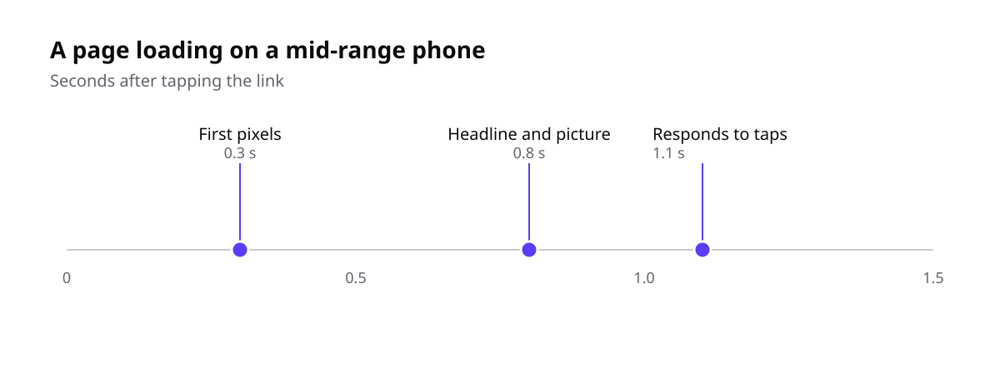
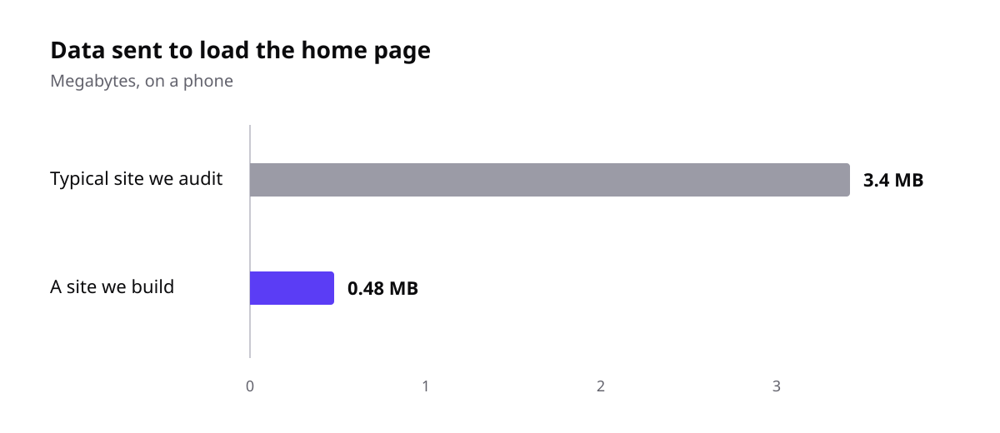

When a client asks us for a fast website, they usually mean a green score in Google’s PageSpeed test. That score is useful, but it measures a lab. Your visitors live in the real world: on a train, on an older phone, with twenty tabs open.
Three moments that matter
Google measures speed with three numbers called Core Web Vitals. In plain words, they answer three questions a visitor asks without thinking about it:
Can I see it? How long until the biggest thing on the page, usually the headline or the main picture, is on screen. Aim for under 2.5 seconds.
Does it respond? How long the page takes to react when you tap a button or open a menu. Aim for under 200 milliseconds.
Does it stay still? Whether things jump around while the page loads, so you tap the wrong link. Aim for almost no movement at all.

What a visitor sees on a mid-range phone, second by second.
Where the weight comes from
Most slow sites we audit are not slow because of their servers. They are slow because of what they send: large photos, several fonts, and scripts for chat widgets, trackers and sliders that nobody asked for.

A typical site we audit, compared with the sites we build.
What we do on every site
Pictures are resized and saved as modern formats, and only load when they come into view
One font family, loaded from the same server as the site
No script on a page unless that page needs it
Every page tested on a real mid-range phone before launch
None of this is exotic. It is a list of small decisions, made early and kept for the life of the site. If you would like us to look at your site’s speed, get in touch.